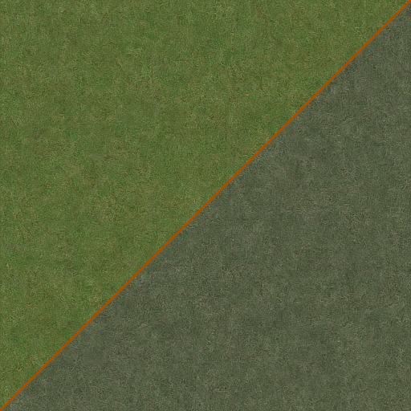
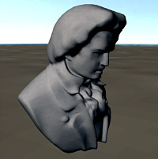
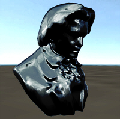

6. Technical reference
This paragraph is a documentation on Crashday's technical details including textures, “level of detail” and the .p3d-format.
6.1. Textures and shaders
Crashday's textures are usually consisting of two files. The bitmap file (.dds, .tga) and the material shader file (.tex). If no shader file is available, the in-game material will be provided with default shader parameters. But nevertheless be sure to have a .tex-file created for any new texture you added. Textures and their related .tex-files are required to have the same filename and be in the same directory.
Except for cars all textures are located in [crashday]\textures (in subfolders for special purposes).
Note:
Due to video card capabilities, Crashday (like any other realtime application) only supports dimensions of 16x16, 32x128, 1024x1024, etc. (potence with basis 2)
.dds textures in Crashday
In Crashday the .dds format is usually used for texturing objects like track pieces. As .dds is a compressed texture format, it offers a very small file size but with some exceptions:

Original “floor1” texture and desaturated version
it holds its own precalculated mipmaps so be sure they are generated when exporting .dds with your graphics applicationit is capable of an alpha channel so be sure to have one set when exporting .dds with your graphics application
it needs a related medium and lowres version in the “medium_detail_textures” and ”low_detail_textures” folders
Crashday desaturates every texture in-game. As post-processing isn't supported by .dds format, you need to do it manually with your graphics application. Best way to do this is applying a simple grey layer with 50% color-blend on top of your texture.
.tga textures in Crashday
Crashday primarily uses the .tga-format for car texturing. However you can of course use it for any other purpose too. But be warned , as it is a non-compressed format it uses much more video memory. Below some particularities when working with .tga format are listed:
mipmaps for .tga-files are created by Crashday during runtime
it is capable of an alpha channel so be sure to have one set when exporting .tga with your graphics application
it needs no related medium and lowres version in the “medium_detail_textures” and ”low_detail_textures” folders, they are created by Crashday during runtime
be sure to use .tga format when creating car textures as .dds isn't capable of in-game color changing
Explanation of Crashday's .tex-shading files
A texture shader info file defines the way how a certain texture is being shaded in Crashday (i.e. lighting and rendering). Also it defines the physical material a texture is of. The file is an ASCII .tex-file associated to a texture with the same name and the extension .dds/.tga in one of the texture folders.
The following list explains the shading file in detail:
|
Example file: floor1.cfl |
Explanation |
|
# no alpha |
“has_alpha” if alpha channel is used for transparency, otherwise leave empty (or comment) |
|
# has mipmaps |
“disable_mipmapping” if game should not use mipmapping for this texture (especially for cars), otherwise leave empty (or comment) |
|
default # ingame material type |
material type defines the physical material a texture is of, either “default” (asphalt, concrete) or “grass” (loose floor, dirt roads) |
|
use_shaderparams_from |
either reference to an existing shader file or definition of own shader parameters (see below) |
|
_ground.tex |
Crashday only works with a set of predefined shaders, which can partly be modified by the values below the shader type in the shader file.
The supported types are:
|
default |
simple diffuse lighting (default shading type) |
|
default # shader type |
just that line, no additional parameters |
|
specularvertex |
diffuse lighting with specular reflection map |
|
specularvertex # shader type |
specular identifier |
|
ultra # minimum quality to activate shader |
the “Surface Reflection Quality” that has to be set in Crashday's graphics option menu to activate this shader |
|
_self_ # specular map |
either “_self_” to use own alpha channel as secular map, or specify a different file to use its alpha channel |
|
0.7 # overall strength |
specular overall strength |
|
2 # power exponent |
specular power exponent |
|
1 # remaining diffuse sun light |
the remaining diffuse brightness on non-reflecting areas of an object |
|
diffuseenvmap |
diffuse lighting with environment mapping |
|
diffuseenvmap # shader type |
specular identifier |
|
0.3 # minimum reflection |
minimum reflection strength |
|
0.7 # maximum reflection |
maximum reflection strength |
|
3 # fresnel exponent |
fresnel exponent |
|
chrome |
chrome shader |
|
chrome # shader type |
specular identifier |
|
1 # amount of chrome |
amount of chrome blended against diffuse |
|
additiveblend |
additively blended textures |
|
additiveblend # shader type |
just that line, no additional parameters |
6.2. Overview of existing material shaders
Crashday offers a range of existing shaders files and shared materials for general purposes. (especially when creating cars)
Below is a list of predefined shader files. Feel free to reference to them:
|
_asphalt.tex |
material shader appropriate for asphalt textures |
|
_cardboard.tex |
material shader appropriate for paper etc. |
|
_concrete.tex |
material shader appropriate for concrete textures |
|
_ground.tex |
material shader appropriate for natural floors (e.g. grass) |
|
_metal.tex |
material shader appropriate for metal textures |
|
_plaster.tex |
material shader appropriate for plaster walls etc. |
|
_plastic.tex |
material shader appropriate for plastic surfces |
|
_rim.tex |
material shader appropriate for rim metal |
|
_wood.tex |
material shader appropriate for wood textures |
This is a list of existing shared materials that can be used when texturing cars for example:
|
glass.dds |
reflective glass material used for all glass parts on cars (has damage map) |
|
|
carplast.dds |
grey plastic used for bright plastic parts on cars |
 |
|
carplas2.dds |
dark plastic used for dark plastic parts on cars |
|
|
carplas3.dds |
dark reflective plastic used for reflecting plastic parts on cars |
 |
|
lighchrm.dds |
headlight chrome used for reflecting chrome-like surfaces in headlights |
|
|
rubber.dds |
rubber used for parts that seperate windows and car body |
|


6.3 Level Of Detail implementation
Crashday offers up to four different “level of detail” steps which will be visible with different distances if the corresponding mesh is available. The collision detection is not influenced by any of these meshes. It is only calculated by the standard visible mesh.
“Level of detail” meshes are identified by their names. Below is a list of all available steps:
|
[meshname].0 |
displayed when closer than 36 meters |
|
[meshname] |
standard mesh, displayed whenever no “level of detail” is displayed |
|
[meshname].2 |
displayed when distance more than 120 meters |
|
[meshname].3 |
displayed when distance more than 250 meters |
|
[meshname].4 |
displayed when distance more than 370 meters |
Meshes that have bend capabilities (see 4.4/4.5.) can be provided with “level of detail” too, but make sure the borders of any “level of detail” mesh is still divided every 5m. Otherwise ugly holes will appear in the distance.

Main
mesh in brgloop.p3d

Main.3
mesh in brgloop.p3d

Main.4
mesh in brgloop.p3d
NOTE:
Not every mesh needs one or more “level of detail” step(s) and not every mesh needs all steps. Please use “level of detail” meshes where necessary, because more meshes per .p3d model file will cost more performance too.
6.4. Official Crashday car certificate guidelines
This is an overview sheet of specifications a complete Crashday update car should fulfil:
-
necessary files
vehicle model file (.p3d)
vehicle specification file (carinfo.cca)
vehicle shop list file (shop.lst)
vehicle torque file (.crv)
unique car logo (carlogo.tga)
GI rendered shadow texture (shadow.tga)
obsolete rpm-meter (rpmtex.tga)
mesh features
detachable parts like bumpers and mirrors
overlay light meshes with corresponding light objects
static minigun body mesh
collision mesh
ray casting mesh
“level of detail” mesh
polygon count of about 6000 polys visible at a time
texture features
one or two body textures with GI baked pre-shading
two additional textures for lights and mis parts
damage maps for each of them
.tex shader files for each of them
.cca features
correct physical data
correctly set positions
AI setups
other features
preview image for car manager
version information file
everything included in car packet file (.cpk)
6.5. P3D file format specification
Hm, hier weiß ich ehrlich gesagt nicht wirklich was rein soll :)
7. Example reference
The SDK provides an example file (.max/.3ds) of each track piece theme. (see appendix) This way you got the exact positions of border vertices to create your own track pieces matching to the existing ones.
The following list shows all delivered files:
-
arenastr.3ds
arenastr.max
straight arena track piece
arenastrc.3ds
arenastrc.max
straight arena track piece with roof
bridge1.3ds
bridge1.max
displayed when distance more than 120 meters
dirtroad.3ds
dirtroad.max
straight off-road track piece
field.3ds
field.max
plane grassy track piece
highway2.3ds
highway2.max
one half of speedway
rwstreet.3ds
rwstreet.max
straight race track piece
street.3ds
street.max
straight town road track piece
streetb1.3ds
streetb1.max
straight country road track piece
subtun.3ds
subtun.max
straight small tunnel track piece
wsubtun.3ds
wsubtun.max
wide tunnel track piece